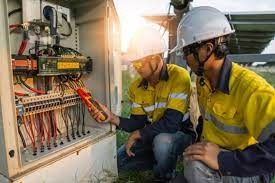
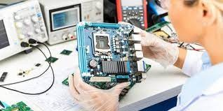

La ingeniería eléctrica es una rama de la ingeniería que se ocupa de la tecnología de la electricidad. Se ocupa específicamente de la electricidad, el electromagnetismo y la electrónica, así como de la energía, los sistemas de control, las telecomunicaciones y el procesamiento de señales.
vide de apoyo :
esta rama de la ingenieria esta enfocada a la necesidad de automatizar procesos de tareas repetitivas con el fin de eliminar trabajos peligrosos para las personas que trabajan en el area industrial
vide de apoyo :
Diseñar y dar mantenimiento al sitio web de la organización. Establecer sistemas para respaldar la información generada por aplicaciones y páginas web. Desarrollar sistemas de contingencia ante posibles fallas. Detectar posibles errores de seguridad y proteger el sistema contra accesos indeseados.
vide de apoyo :
La Ingeniería Mecatrónica es una carrera que combina diferentes áreas de conocimiento para crear mejores productos, procesos o sistemas. Algunos de los problemas que resuelve la Ingeniería Mecatrónica son:
Diseño de elementos mecánicos electrónicos
Automatización de maquinaria
Desarrollo de máquinas inteligentes
Operación y mantenimiento de sistemas mecatrónicos
vide de apoyo :
problemas aplicaciones innovadoras de la Tecnología de Información. Diseña y/o desarrolla sistemas de software integrado, sistemas inteligentes. Diseña y/o desarrolla software de dispositivos móviles de calidad. Diseña y/o desarrolla aplicaciones innovadoras de la Tecnología de Información.
vide de apoyo :